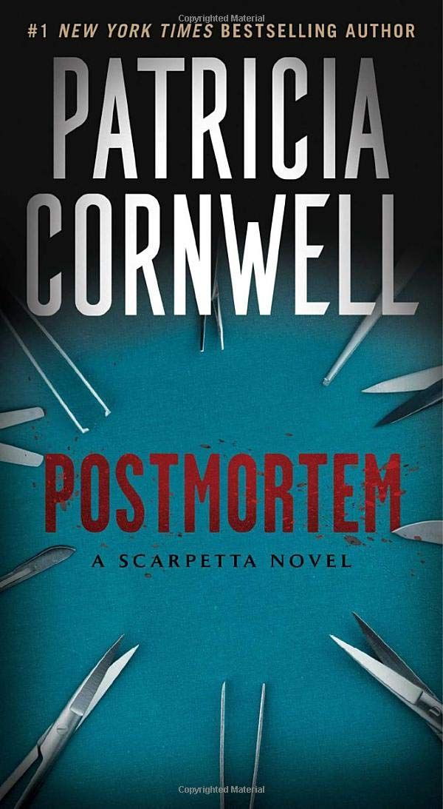

 Four women with nothing in common, united only in death. Four brutalized victims of a brilliant monster - a "Mr. Nobody", moving undetected through a paralyzed city, leaving behind a gruesome trail of carnage . . . but few clues. With skilled hands, an unerring eye, and the latest advances in forensic research, an unrelenting female medical examiner - Kay Scarpetta - is determined to unmask a maniac. But someone is trying to sabotage Kay's investigation from the inside. And worse yet, someone wants her dead . . .